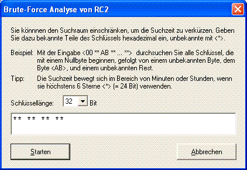

Sie erreichen diesen Dialog über den Menüeintrag Analyse \ Symmetrische Verschlüsselung (modern) und das entsprechende Untermenü für das Verfahren.
In diesem Dialog wird für die folgenden Verschlüsselungsverfahren
der Schlüsselbereich angegeben, der bei dem Brute-Force-Angriff durchsucht wird.
Nachdem Sie den Suchraum der Schlüsselsuche eingegeben haben, können Sie den Brute-Force-Angriff starten, indem Sie auf den Knopf Starten klicken oder die Eingabetaste betätigen. Abbrechen beendet die Analyse.
Die Schlüssel werden in hexadezimaler Form eingegeben, d.h. jede Stelle steht für 2^4 Werte.
Dabei schreibt man für unbekannte Stellen einfach ein *. So werden etwa bei der Eingabe "10 ** 23 00 ... 00" insgesamt (2^4)*(2^4) = 256 Schlüssel durchsucht. Diese sind
Fünf unbekannte Stellen bedeuten schon, dass maximal 2^(4*5) = 1.048.576 Schlüssel durchprobiert werden.
Die Laufzeit der Analyse hängt hauptsächlich von der Anzahl der unbekannten Stellen ab. Jede zusätzliche unbekannte Stelle verlängert die Suchzeit um den Faktor 16. Außerdem variiert die Laufzeit für die unterschiedlichen Algorithmen und Schlüssellängen. Sie wird zusätzlich davon beeinflusst, wieviele Bytes des Dokuments im Entropietest berücksichtigt werden (siehe hierzu Dialog Analyseoptionen):
Bemerkung 1:
Bei der Analyse von DES (Triple-DES) wird eine Schlüssellänge von 64 (128) Bit angezeigt. Da diese Verfahren pro Byte nur 7 Bit für den Schlüssel nutzen, besteht die effektive Schlüssellänge nur aus 56 (112) Bit.
Bemerkung 2:
Die Möglichkeit, beliebig viele Sterne für den Schlüsselbereich anzugeben, also auch den Schlüsselraum vollständig absuchen zu lassen, bedeutet nicht, dass man CrypTool als Hackertool anwenden kann. Dadurch wird dem Benutzer nur erfahrbar gemacht, mit welchen riesigen Zeiträumen (z.B. 10^26 Jahre für einen ganzen 128-Bit-Schlüssel) zu rechnen ist, wenn die Schlüssel groß genug sind und das Verfahren gut genug funktioniert.